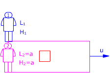

El rectángulo representa un recinto que se mueve
respecto al observador 1 con velocidad u
El observador 2 y el cuadrado están dentro del recinto

Observador 1:
Ve el cuadrado moviéndose con velocidad u. Midiendo sus dimensiones
obtiene: L1, H1
Observador 2:
Ve el cuadrado quieto. Midiendo sus dimensiones obtiene: L2 = a,
H2 = a
Estas dimensiones son propias
Aplicando la conversión de longitudes resulta:
$$\begin{aligned}
&L_1=\gamma\,L_2=\gamma\,a\quad,\quad H_1=H_2=a\\[6pt]
&\gamma=\sqrt{1-\left(\frac{u}{c}\right)^{2}}
\end{aligned}$$
El perimetro del cuadrado visto por el observador 1 será:
$$P_1=2\,(L_1+H_1)=2\,(\gamma\,a+a)=2\,a\,(\gamma+1)$$
| |
$$\begin{aligned}
&\gamma=\sqrt{1-\left(\frac{u}{c}\right)^{2}}\approx1\\[6pt]
&P_1=2\,a\,(\gamma+1)=4\,a
\end{aligned}$$ |
|
$$\begin{aligned}
&\gamma=\sqrt{1-\left(\frac{u}{c}\right)^{2}}\approx1\\[6pt]
&P_1=2\,a\,(\gamma+1)=4\,a
\end{aligned}$$ |
$$\begin{aligned}
&\gamma=\sqrt{1-\left(\frac{u}{c}\right)^{2}}\rightarrow0\\[6pt]
&P_1=2\,a\,(0+1)=2\,a
\end{aligned}$$ |
|
A la velocidad de la luz, el cuadrado se reduce
a un segmento de longitud a, entonces ¿el perímetro
no debería ser a? Definiendo perímetro como
la distancia que se recorre para ir de un vértice al
mismo vértice, siguiendo la figura, resulta un perímetro
2a |
|
|